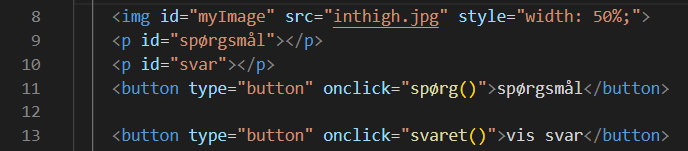
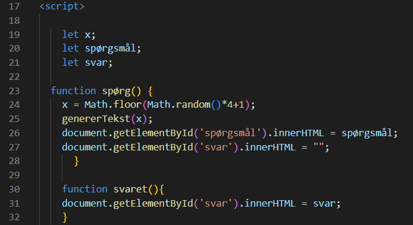
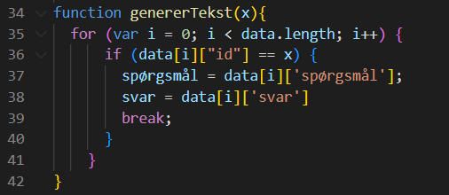
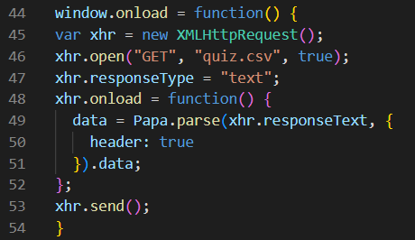

Databaser
Gruppe: Malde Munkholm, Frederik Gredal, Jens-Corneliu, Tjalfe Spang og Carl Feldhutter.
Hvad er en database?
I kodetermer er en database en softwareapplikation, som er designet til at opbevare, organisere og administrere
store mængder data på en struktureret måde. En database består typisk af en samling af tabeller, hvor hver tabel indeholder rækker
og kolonner, der indeholder data. For eksempel kan en database, der indeholder information om brugere på en
hjemmeside, have en tabel til brugeroplysninger, en tabel til login-information og en tabel til brugerens aktivitetshistorik.
Opbygning af vores egen database
Som en del af det korte forløb omhandlende databaser har vi fået til opgave at lave en database selv. Denne database har vi brugt til
at lave en interaktiv quiz, hvor et spørgsmål bliver stillet ved at klikke på knappen "spørgsmål" og et svar kan findes ved at man
klikker på knappen "svar". I følgende vil jeg beskrive de mest relevante kodestumper.

Her kreeres først et billede, som gives id "myImage". Dernæst defineres der to id i form af "spørgsmål" og "svar". Dette bruges senere
hen til når quizen skal laves. De næste to kodestumper kreerer to knapper "spørgsmål" og "vis svar", som hver kalder på to funktioner
der hedder spørg() og svaret() når man klikker på dem.

Der defineres her 3 let-variabler i form af "x","spørgsmål" og "svar". x bruges i funktionen nedenunder til at lave et tilfældigt
valg af et tal fra 1 til 5. Dette er til for at der bliver valgt et tilfældigt spørgsmål i quizen når man trykker på "spørgsmål" knappen
som vist senere hen. GenererTekst(x) vælger det nummer spørgsmål og svar, som x lander på og generer den tekst der står der.
document.getElementById('spørgsmål').innerHTML = spørgsmål bruges til at åbne csv-dokumentet og vælge det element der har id "spørgsmål"
inde på dokumentet. Funktionen "function svaret()" fungerer på samme måde.

Funktionen genererTekst(x) inkluderer et forloop. Inde i forloopet tjekker funktionen for om data[i]["id"] er lig med variablen x.
Hvis dette er sandt sættes spørgsmål = data[i]['spørgsmål'] og svar = data[i]['svar'], hvilket betyder at "spørgsmål"/"svar" er lig med
elementet spørgsmål/svar i arrayet data[i]. Efter dette kommer et break der stopper loopet.

Når hele hjemmesiden er loadet ind i browseren (inkluderer: bileder, scripts o.s.v.) aktiveres window.onload = function(). Efter dette
laves variablen var xhr = new XMLHttpRequest(). XMLHttpRequest() gør så en anmodning til en server kan laves uden at reloade hjemmesiden.
"xhr" gør så denne ændring bliver gemt og "new" gør så der laves en ny XMLHttpRequest() hver gang. xhr.open("GET", "quiz.csv", true)
gør så XMLHttpRequest() bliver konfigureret til at lave en "GET" efterspørgsel til "quiz.csv" filen. xhr.responseType = "text" gør så
så svaret kommer ud som en string. Onload gør så en funktion bliver udløst så snart alle webresources er loadet. Papa.parse() bruges her
til at returnere et array, hvor alle objekter i arrayet repræsenterer en linje i csv filen refereret ovenfor. header: true gør så den
øverste linje i csv filen bliver opfattet som hver objekts overskrift af parset. Alt dette gemmes i variablen "data". Denne data variabel
kan bruges til at manipulere og vise data på websiden. xhr.send(); bruges til at sende andmodningen til serveren.